Transactional Structured Reasoning: Contamination Safety and Recovery
We formalize a transactional execution semantics for structured reasoning with LLM-generated local proposals. The central object is not the model's hidden chain of thought, but the committed reasoning state used to produce the final answer. We prove two basic claims. First, under sound validation, faithful rollback, and answer-extraction soundness, invalid intermediate proposals cannot contaminate committed reasoning state, and any emitted final answer is certified by a committed root certificate. Second, treating the LLM as a stochastic proposal kernel, retries and refinement can amplify the probability of eventually finding a valid local update without increasing contamination risk under exact validation, but the amount of amplification is conditional: it is the i.i.d. rate
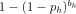
only under sample independence, is upper-bounded by it under shared latent failure modes, and is recovered in calibrated form via a persistence bound. These claims are intended as the reasoning-state analogue of transactional no-regression, adapted from mutable system state to mutable proof/claim state.Setup
Let a problem instance be represented by a rooted dependency structure
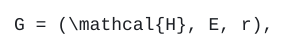
G = (\Obligations, E, r),where
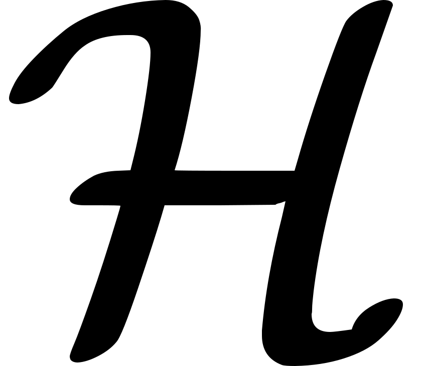
is a finite set of reasoning obligations, is a dependency relation, and
is a dependency relation, and 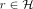
is the root obligation whose solution determines the final answer.The committed reasoning state at time
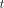
is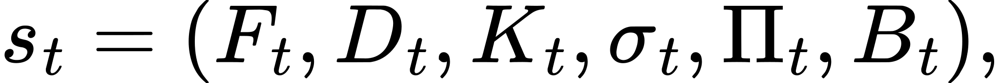
s_t = (F_t, D_t, K_t, \sigma_t, \Pi_t, B_t),where
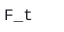
is the actionable frontier,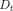
is the set of expanded obligations,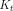
is the set of solved obligations, is the map of committed values or claims,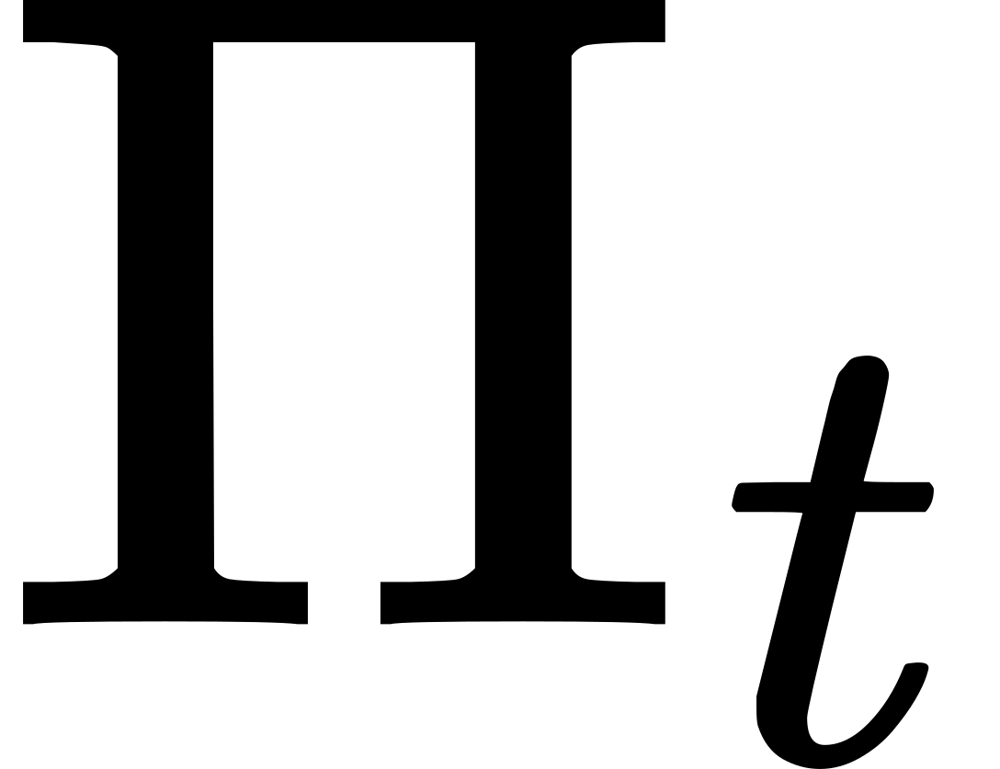
is the set of certificates/provenance records, and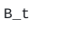
is the remaining retry budget.A local proposal is an update
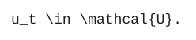
u_t \in \Actions.Depending on the task,
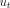
may be a numeric local solution, an executable local expression, an assignment claim, an elimination claim, or a structural expansion.The LLM is modeled as a stochastic proposal kernel:
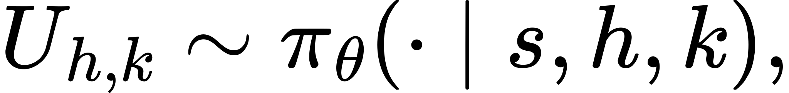
U_{h,k} \sim \LLM(\cdot \mid s, h, k),where
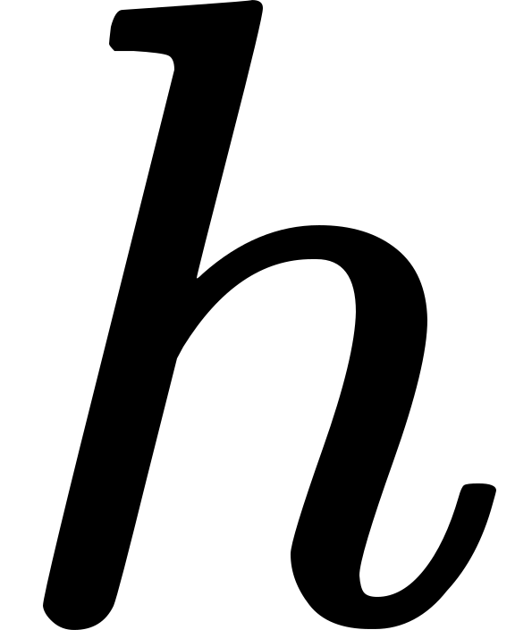
is the current obligation and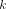
is the attempt index. The executor does not directly trust samples from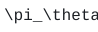
. Every proposed update is passed through a validator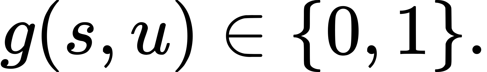
g(s,u) \in \{0,1\}.Given state  and proposal
and proposal
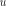
, let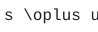
denote the candidate state obtained by applying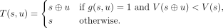
to a copy of . The committed transition is
. The committed transition is
T(s,u) =
\begin{cases}
s \oplus u & \text{if } g(s,u)=1 \text{ and } \pot(s \oplus u) < \pot(s),\\
s & \text{otherwise.}
\end{cases}The rejected case is a rollback: the committed state remains exactly
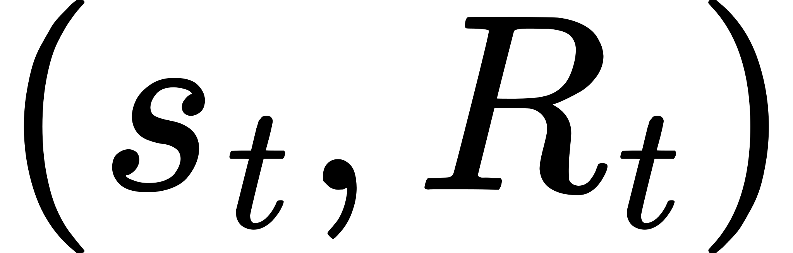
.The executor may also maintain an auxiliary rejection memory
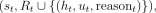
containing records of rejected proposals, validator reasons, and retry counts. This is operational feedback, not committed reasoning state. It may condition later LLM proposals, but it is excluded from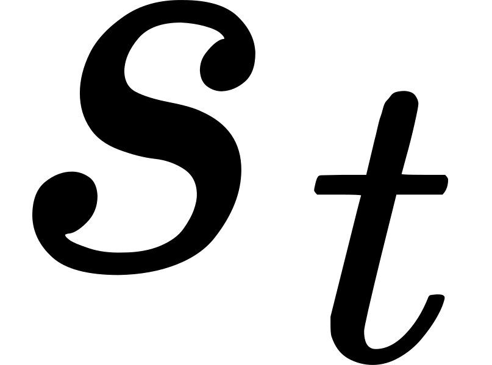
,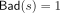
, and final answer extraction.On a rejected proposal for obligation
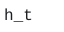
, the operational context may change from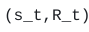
to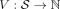
(s_t, R_t \cup \{(h_t,u_t,\mathrm{reason}_t)\}),or to a bounded/windowed version of that update. The committed projection remains exactly
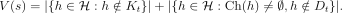
. On an accepted update,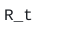
may be reset or scoped to the new committed state, because the entailment context has changed.Let
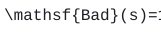
if committed state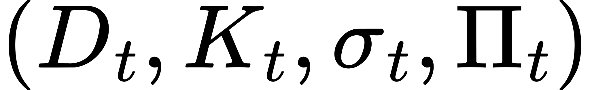
contains at least one invalid committed claim, value, or certificate. Otherwise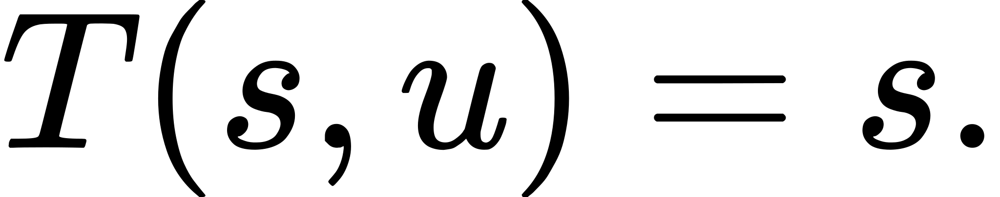
. Define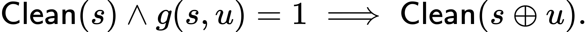
\Clean(s) \iff \Bad(s)=0.The predicate
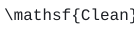
concerns committed reasoning state only. The LLM may generate invalid hidden text, invalid drafts, or invalid candidate proposals; these are not contamination unless they enter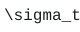
or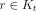
. Rejection memory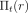
is also not contamination, provided final answer extraction ignores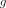
and is not treated as a committed fact store.
is not treated as a committed fact store.
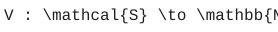
is a nonnegative integer potential measuring unresolved work. In the current implementation this may be an action-unit potential such as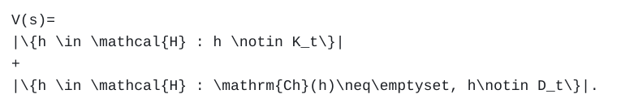
\pot(s)=
|\{h \in \Obligations : h \notin K_t\}|
+
|\{h \in \Obligations : \mathrm{Ch}(h)\neq\emptyset, h\notin D_t\}|.For logic-grid tasks,
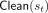
may instead count unresolved person obligations and remaining candidate claims.Claim I: Contamination Safety
The first claim is the reasoning-state analogue of transactional safety: invalid intermediate thoughts cannot poison the state used for the final answer.
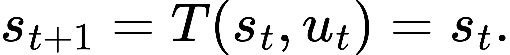
\Clean(s_0).Only the transactional executor can mutate committed state fields
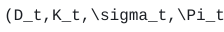
. Model samples, prompts, scratchpads, and rejected candidate states are not directly committed.If a proposal
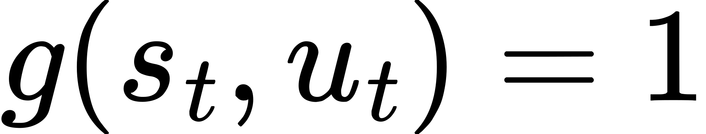
is rejected, the next committed state equals the previous committed state: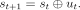
T(s,u)=s.For every clean state
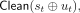
and proposal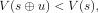
,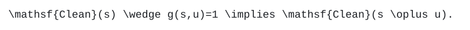
\Clean(s) \wedge g(s,u)=1 \implies \Clean(s \oplus u).For exact validators, this is enforced by checking the proposed local update against an oracle evaluator, solver, proof checker, or entailment checker.
The final answer is computed by a function
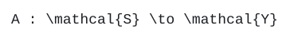
A : \State \to \mathcal{Y}that depends only on committed fields such as  and , not on rejected proposals or hidden LLM drafts.
and , not on rejected proposals or hidden LLM drafts.
The executor emits a final answer only when the root obligation has been solved, i.e. , and the answer is computed deterministically from a committed certificate that the same validator has accepted as a witness for being the correct value of . Equivalently, the validator is invoked on the root certificate before any answer leaves the executor, and accepted certificates correctly witness their claims under the validator's soundness guarantee.
Assumption ass:answer-from-commit is purely structural: it says rejected proposals are not read at answer time. Assumption ass:answer-extraction is what is needed for correctness of an emitted answer; without it, contamination safety guarantees only that the answer was extracted from a clean committed state, not that the emitted value is right.
Assume the initial clean state, exclusive commit authority, faithful rollback, and validator soundness assumptions (Assumptions ass:initial-clean--ass:validator-soundness). Then every committed state reachable by the transactional executor is clean:
\forall t \ge 0,\quad \Clean(s_t).Consequently, rejected or invalid intermediate proposals cannot contaminate the reasoning state used to compute the final answer.
(Note that Assumption ass:answer-from-commit is needed only to guarantee the final answer reads exclusively from this clean committed state, and Assumption ass:answer-extraction is needed only for the correctness corollary below; the cleanness of itself does not depend on either.)
The proof is by induction on .
Base case. By the initial clean-state assumption, .
Inductive step. Assume . Consider a proposal . There are two cases.
If is rejected, faithful rollback gives
s_{t+1}=T(s_t,u_t)=s_t.Therefore  by the induction hypothesis.
by the induction hypothesis.
If is accepted, then and
s_{t+1}=s_t\oplus u_t.By validator soundness and , it follows that
\Clean(s_t\oplus u_t),and hence .
Thus holds for all reachable committed states. Since the final answer function reads only committed state, rejected or invalid intermediate proposals cannot affect the final answer except by failing to contribute a valid committed update.
If the validator is exact, , and the final answer depends only on committed state, then the final answer cannot be poisoned by invalid rejected thoughts.
Under Assumptions ass:initial-clean--ass:answer-extraction with exact validation, if the executor emits a final answer, that answer is correct.
By Theorem thm:contamination-safety every committed state is clean. By Assumption ass:answer-extraction an answer is emitted only when and the validator has accepted the root certificate ; exact validation then implies correctly witnesses . The emitted answer is a deterministic function of these committed fields, so it agrees with the true value of  .
.
Interpretation..
Theorem thm:contamination-safety alone does not give correctness; it gives only that whatever lands in committed state was accepted by the validator on a clean predecessor. Correctness of an emitted answer requires the additional Assumption ass:answer-extraction: the same validator must certify the root before extraction. Even with both assumptions, the executor may still fail to emit (retry budget exhausted, stall, no valid proposal), so the guarantee is conditional on emission. The role of Theorem thm:contamination-safety in this picture is to ensure the predecessor state on which the root certificate is checked is itself clean, so the validator's local guarantee composes into a global correctness guarantee.
Progress and Termination
Contamination safety prevents bad updates from poisoning the answer. A separate progress condition prevents the system from accepting valid but unhelpful updates forever.
If every accepted proposal satisfies
\pot(s \oplus u) < \pot(s),and rejected proposals leave unchanged, then strictly decreases on accepted steps and never increases on rejected steps.
Accepted steps decrease by the commit rule. Rejected steps produce , so .
Assume is a nonnegative integer, accepted steps strictly decrease , and rejected steps consume finite retry budget. Then the executor terminates with success, stall, budget exhaustion, or a configured max-step cap.
There can be at most accepted steps before the potential reaches zero, and at most rejected steps before retry budget is exhausted. A configured max-step cap gives an additional finite bound.
Claim II: Recovery by Retry
Safety alone is insufficient. The useful property is that rejected local failures are non-catastrophic: after rollback, the executor can try again from the same clean state.
Fix a clean state and a frontier obligation  . Define the one-shot local success probability
. Define the one-shot local success probability
p_h(s) =
\Pr_{U \sim \LLM(\cdot \mid s,h)}
\left[
g(s,U)=1
\ \wedge\
\pot(s\oplus U)<\pot(s)
\right].This is the probability that one LLM sample proposes an acceptable, progressive local update.
Suppose the executor attempts obligation up to  times from the same clean committed state , rejected attempts leave unchanged, and attempts are conditionally independent with identical local success probability . Then the probability of at least one valid commit for
times from the same clean committed state , rejected attempts leave unchanged, and attempts are conditionally independent with identical local success probability . Then the probability of at least one valid commit for  is
is
q_h(s,b_h) =
1-(1-p_h(s))^{b_h}.Each attempt fails with probability . By conditional independence, all attempts fail with probability
(1-p_h(s))^{b_h}.Therefore at least one attempt succeeds with probability
1-(1-p_h(s))^{b_h}.Because rejected attempts roll back to the same clean committed state, failed samples do not alter the success probability by contaminating future attempts.
If , then
\lim_{b_h\to\infty} q_h(s,b_h)=1.Interpretation..
The LLM need not be reliable globally. It only needs to assign nonzero probability mass to valid local proposals. Transactions allow the executor to sample this distribution repeatedly while preventing invalid samples from corrupting state.
Sample Correlation and the Limits of Retry Amplification
Theorem thm:retry-amplification assumes that the retries on obligation  are conditionally independent. Empirically, repeated samples from a fixed LLM on a fixed prompt are correlated: failure modes tend to repeat. The realistic generative model has a latent ``hardness'' or ``failure-mode'' variable
are conditionally independent. Empirically, repeated samples from a fixed LLM on a fixed prompt are correlated: failure modes tend to repeat. The realistic generative model has a latent ``hardness'' or ``failure-mode'' variable  that is sampled once per obligation (encoding, e.g., which sub-pattern of the prompt the model is currently confusing), with attempts conditionally independent given
that is sampled once per obligation (encoding, e.g., which sub-pattern of the prompt the model is currently confusing), with attempts conditionally independent given  .
.
Suppose attempts on obligation share a latent variable such that, conditional on  , the failure indicators are i.i.d. Bernoulli for some measurable with . Then
, the failure indicators are i.i.d. Bernoulli for some measurable with . Then
\Pr[Y_1=\cdots=Y_{b_h}=1]
=\mathbb{E}\!\left[\rho(Z)^{b_h}\right]
\;\ge\;
\bigl(\mathbb{E}[\rho(Z)]\bigr)^{b_h}
=(1-p_h)^{b_h},by Jensen's inequality applied to the convex function . Equivalently,
\Pr[\text{success in } b_h \text{ tries}]
\;\le\;
1-(1-p_h)^{b_h}.The bound of Theorem thm:retry-amplification is therefore an upper bound on the achievable retry amplification under the latent-mode model, not a guarantee. The gap grows with the variance of : when failure mode is essentially deterministic per-prompt ( almost surely), retries achieve no amplification and the realised success rate is exactly regardless of  .
.
Diversity restores amplification..
The framework therefore implicitly relies on diversity-inducing machinery to make samples behave more like independent draws and reduce the variance of  . Practical mechanisms include sampling temperature, prompt paraphrasing, varied few-shot exemplars, distinct draft variables, and ensembling across decoders or model instances. Each such intervention can be viewed as enlarging the support of
. Practical mechanisms include sampling temperature, prompt paraphrasing, varied few-shot exemplars, distinct draft variables, and ensembling across decoders or model instances. Each such intervention can be viewed as enlarging the support of  relative to a fixed-prompt baseline.
relative to a fixed-prompt baseline.
A more conservative practical bound..
For empirical use, a pessimistic single-parameter alternative to Theorem thm:retry-amplification is the conditional persistence bound. Let be the event that the first attempts on obligation  all fail, and assume the uniform persistence condition
all fail, and assume the uniform persistence condition
\Pr[Y_{k+1}=1 \mid F_k] \;\le\; \rho_h
\quad \text{for all } k=1,\dots,b_h-1,with . This is a stronger assumption than mere one-step correlation: failures must remain at most -likely conditional on all previous failures, not only on the immediately previous one. Then, applying the chain rule,
\Pr[F_{b_h}]
\;=\;
\Pr[Y_1=1]\prod_{k=1}^{b_h-1}\Pr[Y_{k+1}=1\mid F_k]
\;\le\;
(1-p_h)\,\rho_h^{\,b_h-1},so
\Pr[\text{success in } b_h \text{ tries}]
\;\ge\;
1 - (1-p_h)\,\rho_h^{\,b_h-1}.The bound interpolates between independence (, recovering the Theorem thm:retry-amplification rate) and total correlation (, no amplification beyond the first attempt). The uniform persistence parameter can be calibrated from logged retry trajectories by computing, for each prefix length , the empirical fraction of trajectories whose -st attempt fails given  , and taking the supremum over .
, and taking the supremum over .
Global Success Under Oracle Structure
Let be the set of required obligations for a successful derivation under a fixed oracle structure, topologically ordered as along dependency edges. Suppose the executor must obtain one valid commit for each . We separate the structural chain-rule argument from the local-rate model.
Assume exact validation and rollback safety. Suppose that for each obligation , conditional on all prior obligations having been resolved (i.e. on reaching a clean committed state in which  becomes the active frontier element), the executor resolves with probability at least . Then
becomes the active frontier element), the executor resolves with probability at least . Then
\Pr[\mathrm{success}]
\;\ge\;
\prod_{i=1}^{M} q_{h_i}^{\mathrm{LB}}.Let denote the event that is resolved. By the chain rule,
\Pr\!\left[\bigcap_{i=1}^{M}E_i\right]
=\prod_{i=1}^{M}\Pr\!\left[E_i\;\bigg|\;\bigcap_{j<i}E_j\right]
\;\ge\;
\prod_{i=1}^{M} q_{h_i}^{\mathrm{LB}},using the assumed conditional lower bound at each topological position. Exact validation and clean predecessor states (Theorem thm:contamination-safety) ensure the preconditions of each are satisfied along any path that reaches .
The role of any specific local model — i.i.d. retries, persistence bound, exchangeable mixture — is to supply . Three natural instantiations:
If, conditional on reaching the state at which is attempted, the retries are i.i.d. with marginal success probability at least , then and
\Pr[\mathrm{success}]
\;\ge\;
\prod_{i=1}^{M}\left(1-(1-p_{h_i})^{b_{h_i}}\right).If, conditional on reaching the state at which is attempted, retries on satisfy the uniform persistence condition with parameter , then and
\Pr[\mathrm{success}]
\;\ge\;
\prod_{i=1}^{M}\left(1-(1-p_{h_i})\,\rho_{h_i}^{\,b_{h_i}-1}\right). If on each obligation the failure mode is essentially deterministic given the prompt ( a.s. in the latent-mode model of Proposition prop:correlation-upper-bound), then regardless of , and the lower bound degenerates to the one-shot structured baseline .
a.s. in the latent-mode model of Proposition prop:correlation-upper-bound), then regardless of , and the lower bound degenerates to the one-shot structured baseline .
If, in addition to the i.i.d. instantiation, and for all , and , then
\Pr[\mathrm{success}]
\;\ge\;
\left(1-(1-p_{\min})^b\right)^M.Comparison to non-transactional structured execution..
A one-shot structured baseline that commits the first local proposal succeeds with probability approximately (and is also unsafe: rejected proposals can corrupt downstream state). Transactional retry changes the local factor from to  , where depending on the diversity of samples within an obligation. Exact validation simultaneously prevents failed attempts from contaminating downstream obligations.
, where depending on the diversity of samples within an obligation. Exact validation simultaneously prevents failed attempts from contaminating downstream obligations.
Worked example: same  , four different global rates..
, four different global rates..
The choice of local-rate model dominates the global success probability, even with  and
and  held fixed. As an illustration take identical obligations, per-attempt local success rate , retry budget , and persistence parameter
held fixed. As an illustration take identical obligations, per-attempt local success rate , retry budget , and persistence parameter  . Then:
. Then:
| Regime | Per-obligation  | Global |
|---|---|---|
| One-shot baseline () |  | |
| Deterministic per-prompt failure |  | |
| Persistence-calibrated, | ||
| I.i.d. retries |
The i.i.d. regime beats the persistence-calibrated regime by roughly a factor of , and the persistence-calibrated regime beats the deterministic regime by roughly a factor of . Note that the deterministic regime is indistinguishable from the one-shot baseline at the global level: when each obligation's failure mode is fixed by the prompt, retries within an obligation are wasted and only diversity across prompts (or refinement) can help. The practical implication is that the operative quantity is not  but the variance of
but the variance of  that the executor's diversity machinery induces.
that the executor's diversity machinery induces.
Recovery by Refinement
Retry is not the only recovery operator. If an obligation is too coarse, the executor can refine it into smaller obligations.
A refinement operator replaces a failed obligation  with child obligations
with child obligations
\Refine(h)=\{c_1,\ldots,c_m\}plus, optionally, a recomposition obligation that combines the children into a solution for  .
.
Let  denote the (calibrated or assumed) probability that the executor resolves
denote the (calibrated or assumed) probability that the executor resolves  directly under its allocated retry budget — that is, the
directly under its allocated retry budget — that is, the  supplied by whichever local-rate model (Corollaries cor:product-iid--cor:product-deterministic) applies. Let denote the analogous resolution probability for child
supplied by whichever local-rate model (Corollaries cor:product-iid--cor:product-deterministic) applies. Let denote the analogous resolution probability for child  . Let be the probability that the refinement step itself is proposed validly and accepted by the validator, and let be the probability that the children can be recomposed into a validated solution for
. Let be the probability that the refinement step itself is proposed validly and accepted by the validator, and let be the probability that the children can be recomposed into a validated solution for  .
.
Suppose that, conditional on refinement being accepted, the events `` resolved'' for and ``recomposition succeeds'' are mutually independent — a substantive assumption, equivalent to asserting that no shared latent failure mode couples the children. Then refinement improves the probability of resolving  whenever
whenever
q_{\mathrm{exp}}
\left(\prod_{i=1}^m q_{c_i}\right)
q_{\mathrm{comp}}
\;>\;
q_h.Without the cross-child independence assumption, the same comparison holds with replaced by the joint resolution probability , which must be supplied by the local-rate model.
The left-hand side is the probability that refinement is accepted, every child obligation is resolved, and recomposition succeeds, assuming the stated factorisation across children. The right-hand side is the calibrated probability of resolving  without refinement. Refinement is beneficial exactly when the former exceeds the latter. The fall-back form follows by replacing the product with the joint probability and applying the same inequality.
without refinement. Refinement is beneficial exactly when the former exceeds the latter. The fall-back form follows by replacing the product with the joint probability and applying the same inequality.
Interpretation..
This is a decision rule for adaptive decomposition under whichever model of local resolution the system has calibrated. When local rates are and samples are i.i.d.,  takes the form
takes the form  and the comparison reduces to the original retry-vs-refinement formula. When samples are correlated,
and the comparison reduces to the original retry-vs-refinement formula. When samples are correlated,  may be much smaller than this i.i.d. value, and the comparison should use the calibrated
may be much smaller than this i.i.d. value, and the comparison should use the calibrated  rather than substituting the i.i.d. formula. Naively using the i.i.d. amplified rate when samples share a latent failure mode tends to make refinement look worse than it is, since diverse children can break a shared failure mode that a single coarser obligation cannot.
rather than substituting the i.i.d. formula. Naively using the i.i.d. amplified rate when samples share a latent failure mode tends to make refinement look worse than it is, since diverse children can break a shared failure mode that a single coarser obligation cannot.
Noisy Validators
Exact validators are the cleanest case. For freeform reasoning, validators may be noisy. Two distinct false-accept rates that are easy to confuse must be kept separate:
\alpha_h^{\rightarrow}
=
\Pr[g(s,U)=1 \mid U \text{ is invalid}]
\quad\text{(conditional false-accept rate),}\alpha_h^{\leftarrow}
=
\Pr[U \text{ is invalid} \mid g(s,U)=1]
\quad\text{(posterior false-accept rate),}\beta_h
=
\Pr[g(s,U)=0 \mid U \text{ is valid}]
\quad\text{(false-reject rate).}The two false-accept rates are related by Bayes,
\alpha_h^{\leftarrow}
=
\frac{\alpha_h^{\rightarrow}\,\Pr[U \text{ invalid}]}
{\alpha_h^{\rightarrow}\,\Pr[U \text{ invalid}]
+(1-\beta_h)\,\Pr[U \text{ valid}]},and can be much larger than  when the proposal kernel is weak (high ) or the validator is conservative on valid proposals (high ). The two yield genuinely different contamination bounds.
when the proposal kernel is weak (high ) or the validator is conservative on valid proposals (high ). The two yield genuinely different contamination bounds.
Let be the (random) total number of validator invocations during a run, with deterministic upper bound  given by retry budget plus the commit cap. If every validator invocation has conditional false-accept rate at most , then
given by retry budget plus the commit cap. If every validator invocation has conditional false-accept rate at most , then
\Pr[\exists \text{ bad committed update}]
\;\le\;
\bar{N}\,\alpha_{\max}^{\rightarrow}.Index validator invocations by . Let and . A bad commit at invocation is the event , with
\Pr[V_j=1, I_j=1]
=\Pr[V_j=1\mid I_j=1]\,\Pr[I_j=1]
\le \alpha_{\max}^{\rightarrow}\cdot 1.Union-bounding over the at most invocations,
\Pr\!\left[\bigcup_{j=1}^{N}\{V_j=1, I_j=1\}\right]
\le \sum_{j=1}^{\bar{N}}\Pr[V_j=1, I_j=1]
\le \bar{N}\,\alpha_{\max}^{\rightarrow}. \qedhereIf the executor produces at most accepted commits and every accepted commit satisfies , then
\Pr[\exists \text{ bad committed update}]
\;\le\;K\,\alpha_{\max}^{\leftarrow}.For commit let be the event that commit is invalid. By assumption . Union-bounding, .
Why the distinction matters..
A naive union bound of the form , mixing a commit count with a conditional false-accept rate, is incorrect. As a counterexample, suppose all proposals are invalid (), , the retry budget allows invocations, and the executor halts after accept. Every accept is then a bad commit, and
\Pr[\exists \text{ bad commit}]
=1-(1-10^{-3})^{10^4}\approx 1,which exceeds by three orders of magnitude. Theorem thm:contamination-noisy-invocation gives the correct value , which is vacuous but not false; this reflects that the operating regime is genuinely unsafe.
Which bound to use..
The conditional rate  is what one usually estimates when calibrating a learned validator (held-out invalid examples passed through the validator). The per-invocation bound is therefore the directly measurable one, at the cost of paying for every rejected attempt. The per-commit bound is tighter when it applies, but
is what one usually estimates when calibrating a learned validator (held-out invalid examples passed through the validator). The per-invocation bound is therefore the directly measurable one, at the cost of paying for every rejected attempt. The per-commit bound is tighter when it applies, but  depends on the proposal distribution and is not a property of the validator alone.
depends on the proposal distribution and is not a property of the validator alone.
Effect of false rejects on recovery..
False rejects do not contaminate state, but they reduce recovery probability. If the model proposes a valid local update with probability  and the validator rejects valid proposals with probability
and the validator rejects valid proposals with probability  , then the effective accepted local success probability is
, then the effective accepted local success probability is
p'_h = p_h(1-\beta_h),and retry amplification becomes
q'_h = 1-(1-p_h(1-\beta_h))^{b_h}.Open Problems
The conditional guarantees above leave the substantive design problems open. We collect them here.
Constructing sound validators..
Theorem thm:contamination-safety assumes a sound validator. For most freeform reasoning targets (natural-language proofs, multi-step plans with side effects, open-ended program synthesis), constructing such a validator is the central problem. The framework is most directly useful for tasks that admit a cheap, exact local checker: numeric solvers, executable code with deterministic oracles, formal proofs in a checkable calculus, and constraint problems with verifier subroutines. Identifying the boundary of validator-friendly tasks, and designing decompositions that push freeform problems into validator- friendly sub-obligations, are the substantive research questions.
Optimal budget allocation across obligations..
Given a total invocation budget and required obligations with estimated local success rates , the natural objective derived from the product lower bound is
\max_{b_1,\dots,b_M\ge 0}
\;
\sum_{i=1}^{M}\log\!\left(1-(1-\hat p_i)^{b_i}\right)
\quad\text{s.t.}\quad
\sum_{i=1}^{M} b_i \le B.This is a separable concave allocation; its KKT conditions yield a water-filling rule
\frac{(1-\hat p_i)^{b_i}\log\frac{1}{1-\hat p_i}}
{1-(1-\hat p_i)^{b_i}}
\;=\;
\lambda
\quad\forall i\in\mathcal{R},for a common dual tuned to the budget. With unknown , the problem becomes a structured multi-armed bandit: each obligation is a Bernoulli arm with unknown success probability, retries are pulls, but pulls also drain a shared budget and feed into a topological dependency. Whether standard strategies (UCB, Thompson sampling, or an explore-then-allocate phase based on the water-filling rule above) admit useful regret guarantees against the offline product optimum is open.
Adaptive refinement policies..
Proposition prop:refinement-helps compares ``solve  directly'' against ``refine
directly'' against ``refine  then solve its children'' as if they were exclusive. In practice, the executor first attempts
then solve its children'' as if they were exclusive. In practice, the executor first attempts  for some number of tries and refines only on persistent failure. The right object is a sequential policy that, after failed attempts on
for some number of tries and refines only on persistent failure. The right object is a sequential policy that, after failed attempts on  , decides among continue, refine, or abandon, given a posterior over
, decides among continue, refine, or abandon, given a posterior over  and the remaining budget. Casting this as an optimal stopping problem and characterising the resulting policy (presumably a threshold rule on the posterior mean of
and the remaining budget. Casting this as an optimal stopping problem and characterising the resulting policy (presumably a threshold rule on the posterior mean of  relative to the per-child rates) is open.
relative to the per-child rates) is open.
<span class="paragraph-title">Strengthening the contamination bound under correlated validator errors..</span> The per-invocation union bound Theorem thm:contamination-noisy-invocation is loose when validator false accepts are correlated across invocations, e.g. a learned validator with a systematic blind spot for a particular invalid pattern. In that regime the right object is a mixture model over latent ``vulnerability classes'' that the validator either does or does not catch, with concentration measured against the structure of the proposal distribution rather than the number of attempts. We do not address this here.
Joint optimisation of validator and proposer..
The framework treats  and
and  as independent. In practice they share a model family, and improving the validator can degrade the proposer (and vice versa) under a fixed compute budget. The Pareto frontier between
as independent. In practice they share a model family, and improving the validator can degrade the proposer (and vice versa) under a fixed compute budget. The Pareto frontier between  ,
,  , and
, and  at fixed compute is the practically relevant object, and is unaddressed.
at fixed compute is the practically relevant object, and is unaddressed.
Quantifying the latent-mode variance..
Proposition prop:correlation-upper-bound reduces the gap between realised and ideal retry amplification to the variance of  . Empirical calibration of this variance for representative model/prompt families, together with a quantitative theory of how diversity-inducing interventions shrink it, would convert Theorem thm:retry-amplification from an asymptotic target into a usable operating bound.
. Empirical calibration of this variance for representative model/prompt families, together with a quantitative theory of how diversity-inducing interventions shrink it, would convert Theorem thm:retry-amplification from an asymptotic target into a usable operating bound.
Summary of Claims
The transactional structured reasoning framework supports two core theoretical claims, one structural and one stochastic.
Contamination safety and conditional correctness..
Under clean initialization, exclusive commit authority, faithful rollback, sound validation, final-answer dependence only on committed state, and answer-extraction soundness, two things follow:
- every committed state reachable by the executor is clean (Theorem thm:contamination-safety);
- if the executor emits a final answer, that answer is correct
(Corollary cor:conditional-correctness).
Contamination safety is the structural part — bad samples don't enter committed state — and is unconditional given the assumptions. Correctness of an emitted answer additionally requires that the validator certify the root certificate before extraction. Neither result claims the executor will emit; failure modes (timeout, stall, budget exhaustion) remain.
Safe retry plus conditional recovery improvement..
Treating the LLM as a stochastic proposal kernel, transactional retries under exact validation cannot increase contamination risk relative to a one-shot baseline (rejected attempts roll back to a clean state). The quantitative improvement they provide depends on a local-rate model:
- under conditional independence, the per-obligation rate amplifies from
- under shared latent failure modes, that i.i.d. rate is an upper
- under a calibrated uniform persistence parameter , the rate
 to (Theorem thm:retry-amplification);
to (Theorem thm:retry-amplification);
bound on what is achievable, and the realised rate can be as low as  (Proposition prop:correlation-upper-bound);
(Proposition prop:correlation-upper-bound);
is at least , interpolating between the two extremes.
The global product lower bound (Theorem thm:product-abstract) is stated abstractly in terms of per-obligation lower bounds , which the local-rate model supplies. Refinement is beneficial when the analogous expression for refinement exceeds for the same calibrated rates.
Scope..
These are conditional guarantees, not claims that arbitrary long-horizon reasoning is solved. The structural guarantees (no contamination, conditional correctness) hold whenever the assumptions hold. The recovery improvement is guaranteed to be safe but its magnitude is a function of validator strength, local proposal quality, and sample diversity — none of which the framework itself produces. The substantive engineering questions (constructing sound validators for the task class, inducing enough sample diversity to push  below 1, allocating retry budget across obligations) remain open and are surveyed in Section sec:open-problems.
below 1, allocating retry budget across obligations) remain open and are surveyed in Section sec:open-problems.